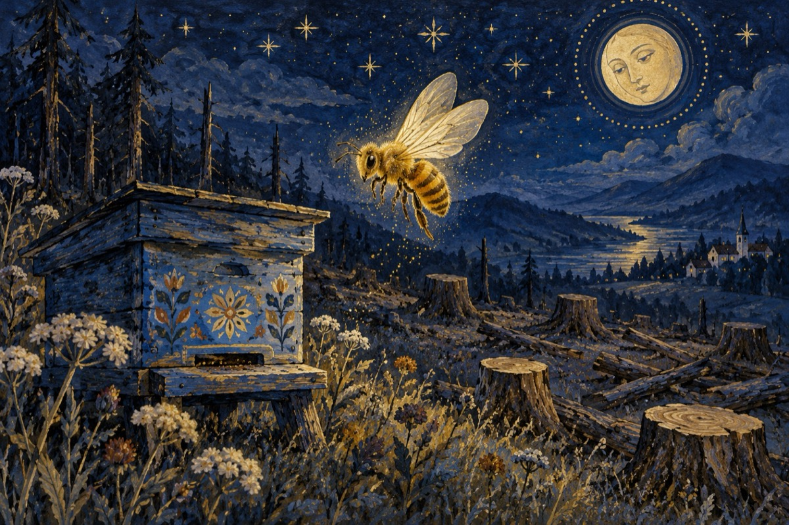

Sună sirena a moarte
Sună sirenele naturii fraților
A jale foarte mare în prisacă
E în pericol viața albinelor
E ca pe front, cine nu moare scapă!
Și-aici nu e vorba de apicultori,
Consecințele pot fi catastrofale,
Sau poate de niscaiva răufăcători.
Ci manifestări ale naturii globale
Vine sau nu vine odată iarna?
Dar până vine primăvara oare,
Sună a moarte, sună sirena.
Există sau nu vreo scăpare?
Nu căutați soluții în laboratoare.
Noi cu mâna noastră am zăpăcit natura
Am apelat cu toții la drujbe și topoare.
Și-acuma observăm, că-am depășit măsura
Spune-o vorbă, niciodată nu-i târziu fraților.
Măcar în ceasul al doisprezecelea,
Să-nceteze total distrugerea pădurilor.
E tot ce se mai poate de a ne salva!
P.S. - Dacă albinele vor dispărea
Va dispare și viața ta!... OMULE!
Vasile Groza